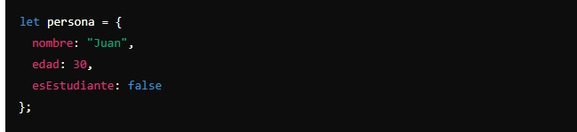

En JavaScript, los tipos de datos son como diferentes tipos de cajas donde podemos guardar distintos tipos de información. Vamos a ver los más comunes y así quedará un poco más claro:
- Número (Number):
Este tipo de dato se usa para representar números, tanto positivos como negativos. Pueden ser enteros o decimales (interger).
Ejemplo: let edad = 25; (Aquí, edad es una variable que almacena el número 25).
- Cadena de texto (String):
Las cadenas de texto son secuencias de caracteres, como palabras o frases compuestas por letras y números. Siempre se escriben entre comillas (simples ' ' o dobles " ").
Ejemplo: let nombre = "Ana"; (Aquí, nombre es una variable que almacena el texto "Ana").
- Booleano (Boolean):
Un valor booleano solo puede ser true (verdadero) o false (falso). Se usa para tomar decisiones en el código.
Ejemplo: let mayorDeEdad = true; (Aquí, mayorDeEdad indica si alguien es mayor de edad).
- Array:
Un array es como una lista que puede almacenar múltiples valores en una sola variable. Los valores se escriben entre corchetes [ ] y separados por comas. Hay que tener en cuenta que, si los valores son de tipo string, deben ir entre comillas.
Ejemplo: let colores = ["rojo", "verde", "azul"]; (Aquí, colores es una variable que almacena una lista de colores).
- Objeto:
Un objeto es una colección de pares clave-valor. Piensa en un objeto como una manera de agrupar información relacionada.
-
Ejemplo:
(Aquí, persona es una variable que almacena un objeto con información sobre una persona).
- Indefinido (Undefined):
Una variable es indefinida cuando se ha declarado pero no se le ha asignado ningún valor.
Ejemplo: let edad; (Aquí, edad está declarada pero no tiene un valor, por lo que es indefinida).
- Nulo (Null):
Null es un valor especial que representa "sin valor" o "vacío". Es como decir que una variable no tiene ningún valor intencionalmente.
Ejemplo: let coche = null; (Aquí, coche está intencionalmente sin valor).
Número: para guardar números.
Cadena de texto: para guardar texto y se pone entre comillas.
Booleano: para guardar valores verdadero/falso.
Array: para guardar listas de valores.
Objeto: para agrupar información relacionada.
Indefinido: cuando una variable se declara pero no tiene valor.
Null: para indicar que una variable no tiene ningún valor intencionadamente.